site info
credit
tooltip / title on hover script i use across all of my site is from malihu
there's always little space in my pages, most notably in the footer, dedicated to the credit of materials used in that respective page! some older pages might not have this so do feel free to ask me!
nonetheless, everything i use for my site can also be found on my resources page! for the fonts i've used you can look at all of them here (o゜▽゜)o☆
a lot of the graphics in my site are from collection pages that rarely have their stuff sourced. i have tried my best to look for credit on some of these but if i've used something that is not free to use please contact me and i will happily remove it! if you know the credit for something you don't see credited or can't find what you're looking for, you're always welcome to send a msg in my chatbox or e-mail. happy coding!


homepage v5 credits
- fonts used: gaegu, bm-neko (heading 1) owls n ink (heading)
- lastfm last played widget by bianca rosa
- most cat graphics from catstuff
- cute memo scans from kawaiiscans
- flower pixels used in nav by tora7.ciao.jp
- pixels used in updates / rss section are from foollovers
- notepad bg pattern from sozaiya405
nekoweb sitebox
- bg pic by Adrian "Rosco" Stef on Unsplash
ARCHIVED - homepage v4 credits
- FOUND IT! style switcher code
- lastfm last played widget by bianca rosa
icy theme
- body background from Erol Ahmed on Unsplash
- fonts used: simple, kakomia, bm-neko, bangalore, nintendo ds bios
garden theme
- fonts used: gaegu, morningtea
- body background pattern from ritva's gallery

sunset theme
- fonts used: gaegu, morningtea
ARCHIVED - homepage v3 credits
- most pixels were found from pixel collection pages. i'd love to find the sources for each of them so i can give proper credit so if any one knows, please e-mail me!
- js audio button code from this template!
- falling items code
- scrolling title tag
- draggable js code for minecraft cat plush :3
- theme switcher js
- last played last.fm js code by bianca rosa
these will depend on the theme selected!
flower.css
- a lot of graphics are from these sites:

 sorahana,
sorahana,  sleepysprout, this little cat here
sleepysprout, this little cat here  is from tora7kg
is from tora7kg - patterned bgs from sozaioukoku
- fonts used in this page are: typo garden, gaegu, spirit, morningtea, nintendo ds bios, simple
- body background by Rodion Kutsaiev from unsplash
tools
software and hardware that i use!
software
- coding editor: visual studio code
- terminal: git bash (oh my posh for custom themes)
- dither me this and ditherit - for images that look like this!

- clip studio paint - anything i've made art / graphic related has been with this program most of the time.
- remove.bg - for removing the bg of pngs
- libresprite - a fork of asesprite. made some pixels with it.
hardware
- puter: HP envy x360 convertible laptop w/ stylus which is how i draw here! / 16gb ram / intel core i7 + nvidia geforce mx450
- keyboard: motospeed wired keyboard with red switches because it's convertible i use a seperate keyboard for it, this also helps it not overheat since i always have it folded in a upside down V shape
- mouse: redragon wireless gaming mouse
- headphones: razer kraken kitty headset i love these headphones to death but the pink leather has started to peel off ever since i moved to a more humid area :') + JBL tune 720bt
homepage layouts archive
a place for me to showcase my previous layouts and my thoughts on them! click on the imgs to open them on a new tab.
version 5
02.mar.25 - ???
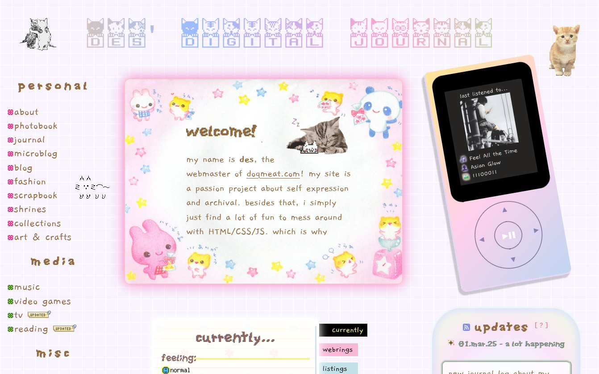i have been dying to re-do my homepage. man i just miss having a bit of a more fun layout so much with different graphics here and there and more colors. i also removed a bit of bloat that my previous homepage had. i was very inspired by these super cute memos scanned by kawaiiscans. i actually wanted the homepage to be built by graphics from those memos but then as i was editing up the png i thought it would be too much. only one of those pngs stayed which is the one you see next to the notepad.
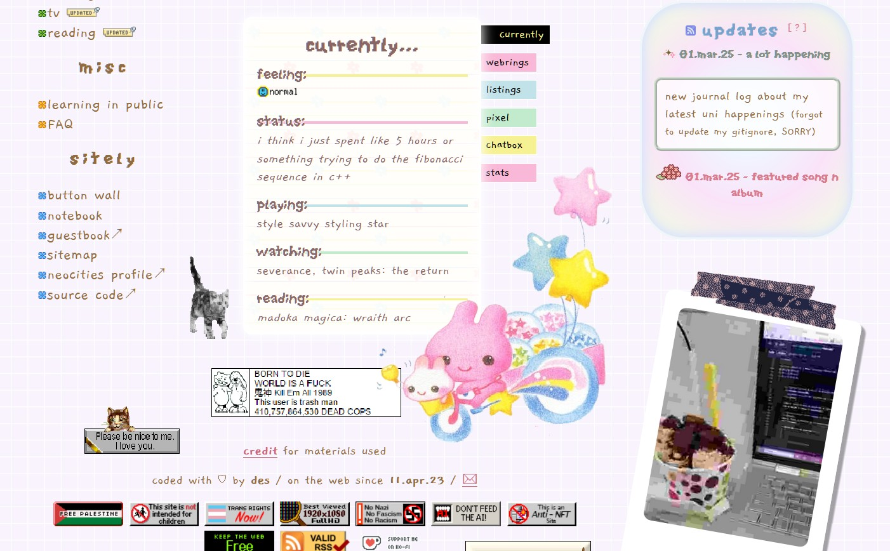i wanted this homepage version to feel a bit more natural and personal to me. which is why it kinda feels like if you were looking at things around a desk. a memo, a notepad, an mp3 player, and a random instant picture.
the part i had the most fun building was the mockup walkman mp3 player which shows what song i last listened to using bianca's last.fm widget code, it is done purely in CSS which was of course the fun part. i've actually had this idea of making a mockup mp3 player and have it function as a music player with old songs i used to listen to on my very own walkman mp3 player when i was little. also want to clean it up a bit and have it as a code bit people can use it on their site. one day though!
the piclog widget also used a tiny bit of JS that i've picked up so far. i did a tiny little script that changes the ratio of the polaroid depending on the ratio of the img being used.
version 4
09.aug.24 - 02.mar.25
 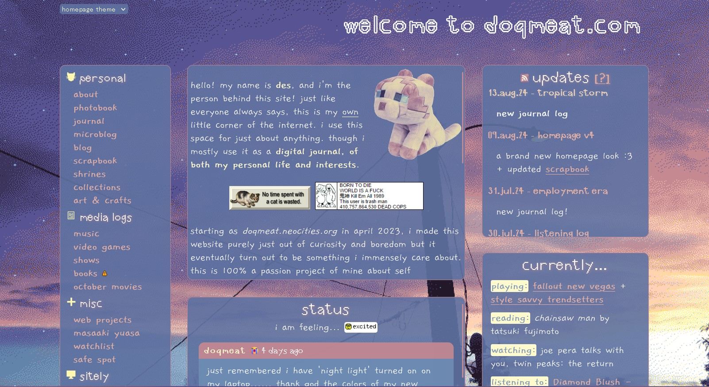
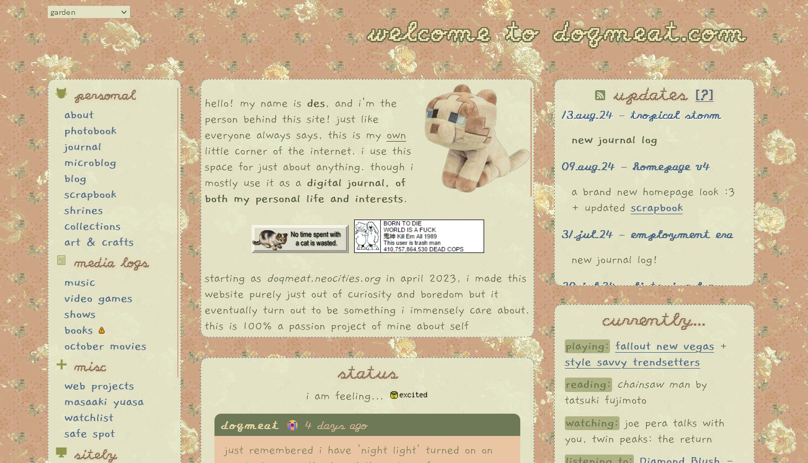
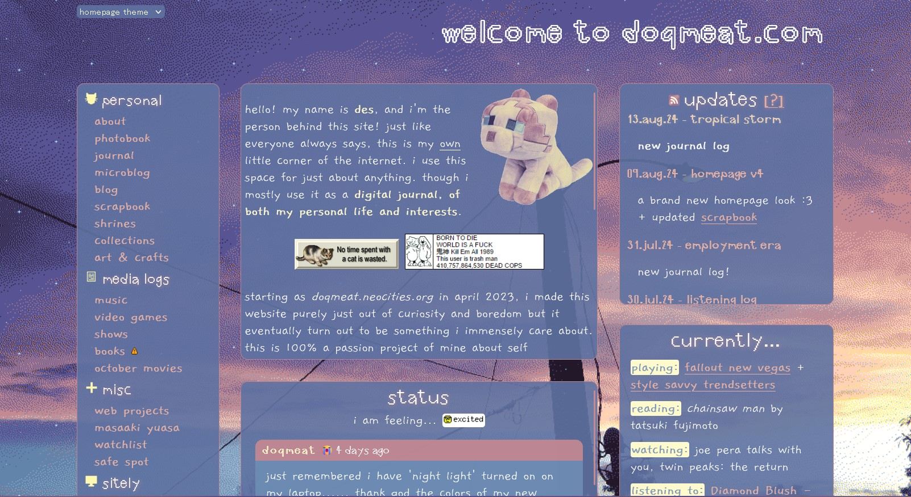
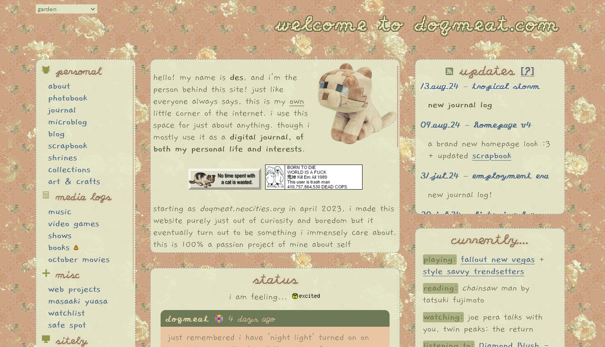
new homepages!! i have a couple of things to say about this theme. i had been wanting to make a new homepage theme since v3 to something more minimalistic. and also smaller on download size. because i no longer have wifi where i live. and navigating thru my site with my hotspot that is most of the time half a mb per second is kinda crazy. which is why it looks kinda bland but i tried my best to give it some flavor!
i also wanted to create more of the things for my own homepage. the (photo) backgrounds used in both of these are pictures taken by me! this was my first time messing around with background-blend and i just loved how it looks! i also made the icons on the navigation sidebar because that way i could change the colors pretty easily.
i also played around with localStorage in javascript though i think it is implemented poorly... i need to keep practicing my JS skills but for now. i think this works LOL.
anyways, for some final thoughts: i really like how it all came together and i'm probably gonna make other themes for it too! i'm glad lots of people liked it too!
version 3
14.dec.23 - 09.aug.24
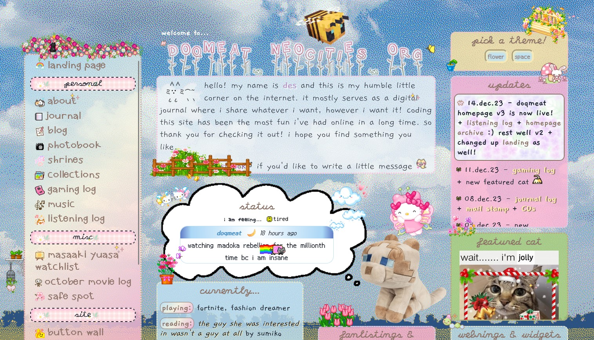 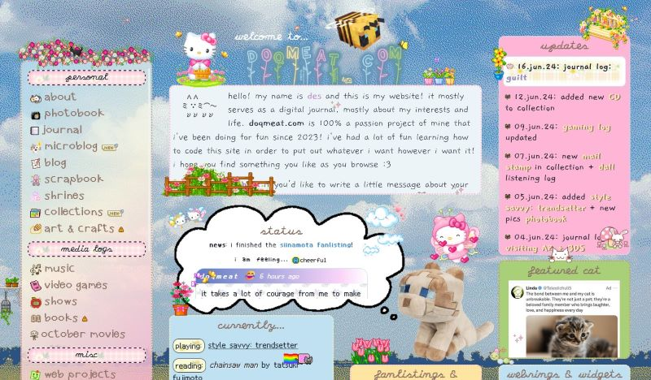 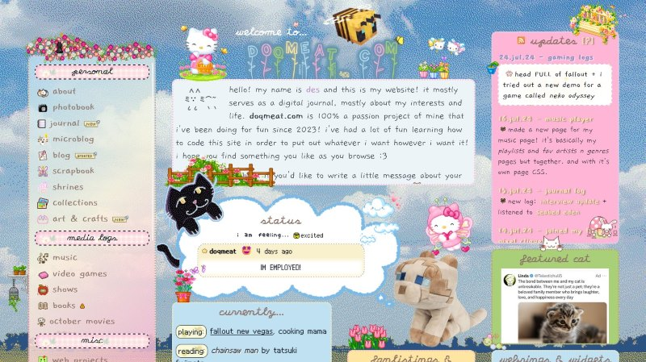this is where i learned about CSS grids AND how to switch stylesheets with js.
i wanted my page to be a bit more compact without really losing the pixel decorations that i love having so this was the result! i learned how to make it responsive to your screen size thanks to it being a grid layout. had a lot of fun making these theme and it took me a whole month to finish it!
i wanted to make a homepage that i could switch themes without having to make a completely new one! i don't think i will ever go through this like... if i ever wanna switch then i'll just make a new homepage from scratch!
version 2
21.may.23 - 14.dec.23

GOOD LORD. i am finally saying goodbye to this homepage!! i am free!!!!! it's so crazy to think that i've had it for so long!
when coding it i was just going crazy about display: inline-block since i did not know a thing about grids... or flexboxes (i think) SO! i made this :) i was pretty happy for the most part with it! until i learned that navigating it sucked a bit since it wasn't responsive. so i've been wanting to remake it ever since!
anyway! i have very fond memories of this one since i built it from scratch compared to v1 where i was using a template.
version 1
12.apr.23 - 21.may.23
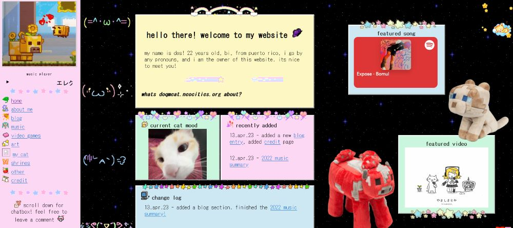 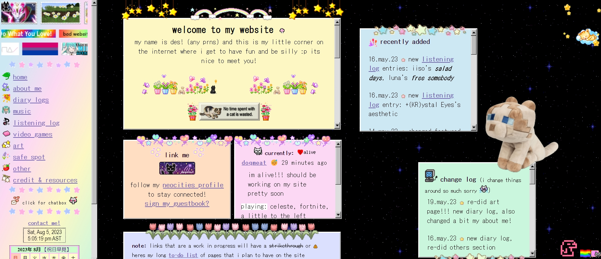the first version of my site!! i used a layout that i had found on tumblr and just started my way up there! it helped a lot since i did not know a lot abt html or css.
honestly i really liked how it just looked like a bunch of sticky notes and i thought that was so charming  i didnt know a lot about html/css the coding for this looked pretty HORRIBLE. like those graphics that you see on top of the sticky notes? yeah i was just doing all of that with top bottom position absolute on seperate divs in the body tag and calling it a day
i didnt know a lot about html/css the coding for this looked pretty HORRIBLE. like those graphics that you see on top of the sticky notes? yeah i was just doing all of that with top bottom position absolute on seperate divs in the body tag and calling it a day  which is not bad!!! it did the job but because of that the process of moving them was so tedious and it would take sometimes HOURS trying to align them pixel perfect. so funny. but i learned!
which is not bad!!! it did the job but because of that the process of moving them was so tedious and it would take sometimes HOURS trying to align them pixel perfect. so funny. but i learned!
since i was just learning, most pages (if not pretty much all of them) were following this sticky notes theme! i did like it but i wanted my pages to look different from each other so the site would be more interesting and fun to work on imo. so i started redoing every page when i got done with that i redid my homepage to the one you see today! (as of now...)
update archive
07.jul.24 update: there will most likely not be any more updates here since my updates are in a RSS xml file!
sorry for the amount of broken links here... i'm always changing stuff around
2024
06.jul.24: journal page has a new layout + new log :]
04.jul.24: new blog post remembering my grandma
03.jul.24: FINALLY re-did my art page + new listening log
02.jul.24: added entries to photobook
25.jun.24: journal log: last day
21.jun.24: updated june scrapbook + added kaiba to TV log
16.jun.24: journal log: guilt
12.jun.24: added new CD to collection
09.jun.24: gaming log updated
07.jun.24: new mail stamp in collection + dall listening log
05.jun.24: added style savvy: trendsetter + new pics photobook
04.jun.24: journal log: visiting AZ + 3DS
03.jun.24: scrapbook: june
01.jun.24: new pics in photobook
26.may.24: journal log: portable CD player
22.may.24: new vegas log
21.may.24: created guestbook page!
20.may.24: journal log: free from uni +fallout log
18.may.24: plushies collection page is now live!
12.may.24: new featured song & album in music
09.may.24: added may page to scrapbook + more cats
04.may.24: new journal log: end of 1st uni semester
02.may.24: new listening log: 3rd desire [reve]
21.apr.24: new notebook page: site + tools info
20.apr.24 - journal log: my dilemma with neocities profile
14.apr.24 - added more games to gaming log!
12.apr.24 - added some new pages to gaming log!
11.apr.24 - my site is 1 year old today ^_^ i wrote about it on my journal
10.apr.24 - listening log: 陽のかけら
09.apr.24 - new journal log: gender
07.apr.24 - updated featured section in music
03.apr.24 - new pic on photobook + last update to march scrapbook + created a practice page for JS + new listening log
29.mar.24 - site is now part of the silly.city webring!
25.mar.24 - new journal log!
24.mar.24 - added web projects + created spring listening log
23.mar.24 - new journal log: warmth + updated photobook + featured cat
21.mar.24 - updated gaming log with paranormasight and other logs + march scrapbook!
17.mar.24 - big update to listening log before winter ends officially!
11.mar.24 - march scrapbook page created!
07.mar.24 - new journal log!
01.mar.24 - journal v3 out!
25.feb.24 - added february to 2024 scrapbook
24.feb.24 - created winter 2024 listening log + new featured song & album
17.feb.24 - new journal log! also changed featured cat
25.jan.24 - updated and fixed mizu shrine code and added a little gallery at the end so i can keep adding mizu pics!
20.jan.24 - added new entry to photobook + scrapbook + new featured page!
15.jan.24 - created cat hoarding page in collection!
12.jan.24 - created scrapbook! will be decorating it more in the future!
11.jan.24 - journal log: grandma
05.jan.24 - journal log: back home! + new featured cat
2023
25.dec.23 - finished my music recap of the year! this will be my last update of the year! happy holidays everyone 
22.dec.23 - journal log
21.dec.23 - reworking art page
18.dec.23 - journal log: university admission accepted!
14.dec.23 - doqmeat homepage v3 is now live! + listening log + homepage archive :) rest well v2 + changed up landing as well!
11.dec.23 - gaming log + new featured cat 
08.dec.23 - journal log + mail stamp + CDs
05.dec.23 - new listening log
02.dec.23 - new pic in photobook + journal log
01.dec.23 - created december listening log + website now deploys from github! + featured song & album
28.nov.23 - fashion dreamer page big update!
27.nov.23 - journal log
24.nov.23 - listening log entry
21.nov.23 - changed "cat of the week" to "featured cat" :3 also there's a new one
19.nov.23 - listening log entries
16.nov.23 - blog code revamp
15.nov.23 - listening log entry
11.nov.23 - CD collection page finished! + added sticker sheets to collections + new stamp in collection!
08.nov.23 - november listening log up with new entry! + journal log
30.oct.23 - listening log entry
28.oct.23 - journal log about my fnaf theater experience
24.oct.23 - big listening log update!
20.oct.23 - music index page rework alongside its pages is finally done!!
19.oct.23 - october movies + working on music page rework!
14.oct.23 - added sticky business to gaming log
11.oct.23 - journal log
09.oct.23 - listening log, finished adding CSS to october movies log, gaming log
08.oct.23 - added october 2023 movies log
07.oct.23 - fav albums page is FINALLY DONE!!!!!!!!!!!!!!!!!!
06.oct.23 - listening log
04.oct.23 - added NEO creatives webring!
03.oct.23 - journal log
01.oct.23 - halloween themed landing page + last september listening log update + journal log + october listening log
30.sep.23 - photobook page added! + new featured song & album on music page
26.sep.23 - masaaki yuasa watchlist + cat of the week + listening log
23.sep.23 - journal log
18.sep.23 - journal log + added piclog widget to "currently" box
15.sep.23 - finished mail stamps CSS! and added new stamps as well
14.sep.23 - journal log + bloodborne log + listening log
13.sep.23 - made a F2U notebook template!
12.sep.23 - new blog post about my history with vocaloid!
10.sep.23 - added a nostalgia and dislikes window to about page! + redid my about paragraphs so it has a better structure now
08.sep.23 - listening log: new kinoue64 album!
05.sep.23 - new page  masaaki yuasa watchlist
masaaki yuasa watchlist
04.sep.23 - updated gaming log, listening log
03.sep.23 - journal log
02.sep.23 - journal log, listening log
29.aug.23 - listening log big update! 5 new entries, new journal log
28.aug.23 - joined pikring, and psycho helmet webring!
24.aug.23 - new journal log
23.aug.23 - links page remade!
22.aug.23 - there's a new cat of the week! go say hi :) oh i also made a new favicon  for the site!
for the site!
18.aug.23 - listening log entry: se bueno, added a greenhouse
16.aug.23 - new featured song & album! now with comments
14.aug.23 - cat of the week has been changed!
13.aug.23 - minecraft gaming log!
12.aug.23 - new diary log
11.aug.23 - gave music index a bit of a makeover + added a webamp player!
10.aug.23 - listening log updated, collections and my stamps, blinkies, buttons page are now up!
09.aug.23 - new diary log
08.aug.23 - added playlists & highlights to music page!
07.aug.23 - changed the index page a tiny bit, made safe spot mobile friendly
06.aug.23 - new diary log, updated august's listening log, new entries to gaming log (dog island, pikmin 4)
01.aug.23 - updated july's listening log and created one for august alongside a new entry 
29.jul.23 - new diary log
28.jul.23 - made a pot for webgardens
22.jul.23 - LOTS of new entries on the listening log, new art post! its just a doodle tho
20.jul.23 - new bloodborne log entry!
16.jul.23 - new blog post about my experience with bloodborne and my anxiety is now up!
14.jul.23 - added project sekai to gaming log, updated listening log with releases from lexie liu, yeule, and odd eye circle
08.jul.23 - added bloodborne to gaming log, shrines index page, july's diary page
07.jul.23 - july's listening log is here!
28.jun.23 - mizu shrine done!!!!, new listening log entries: shinee's hard and kirara's sarah
25.jun.23 - updated june's listening log with a bunch of singles
23.jun.23 - new diary log update! wrote about stuff ive been into lately and a tiny website update at the end
16.jun.23 - added a bunch of stuff i've listened to the june listening log! its finally up to date :]
14.jun.23 - added new games to gaming log
11.jun.23 - blog about the 2023 wholesome games direct!
09.jun.23 - new listening log: fromis_9's unlock my world
08.jun.23 - new diary log: shopping spree! and other notes
04.jun.23 - first listening log entry of june! across the spiderverse ost
02.jun.23 - new diary log: birthday edition!
28.may.23 - new listening log entry: foster the people's torches
28.may.23 - new featured song & album in music page!
27.may.23 - made a page for my previous layouts
26.may.23 - new listening log entry: shinee's sherlock
25.may.23 - made a new page for ramblings! the very first log entry is about blue (2002), added a sitemap
22.may.23 - new listening log entry: enhypen's dark blood
19.may.23 - new listening log entries: iiso's salad days, luna's free somebody
16.may.23 - new listening log entry: +(KR)ystal Eyes's aesthetic
14.may.23 - changed featured song & album in the music page!
11.may.23 - new listening log entry: yoasobi's hajimeteno
10.may.23 - new listening log entry: yeule's sulky baby
08.may.23 - added new entries to listening log
07.may.23 - added a safe spot page for my own use with mental health resources
06.may.23 - added new listening log entry, more video games iframes!
05.may.23 - new diary log talking about beau is afraid and ari aster, added more video game iframes!
03.may.23 - new listening log entry, added more video games iframes
01.may.23 - added new listening log entry, changed featured song & album in the music page!
30.apr.23 - created video games page, and added new listening log entry
25.apr.23 - new listening log entry
23.apr.23 - fav albums page now up!
22.apr.23 - finished art section, created art gallery, and a post for my artwork: halo, added a favs section to my about
20.apr.23 - created past featured songs & albums page for music section, added a new listening log entry
19.apr.23 - today's log entry is dedicated to moon bin. rest in peace
18.apr.23 - added an adoptions page!
17.apr.23 - added a new listening log entry
15.apr.23 - finished my about me page
14.apr.23 - created a listening log for april!
13.apr.23 - created a monthly log entries, created credit page
12.apr.23 - 2022 music summary
11.apr.23 - website created!
past page layouts
showcasing the different layouts my pages have had over time! they are from newest to oldest
landing pages


about
 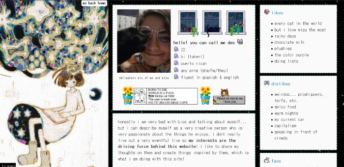
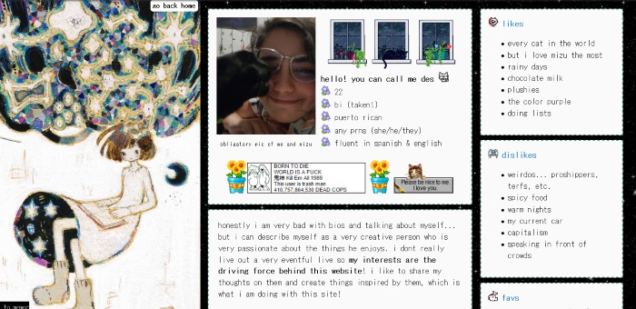
art

listening log


music index


journal


blog
resources, archives, etc